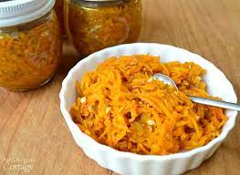

GRANDMA's SWEET CARROT RELISH

DESCRIPTION
A sweet carrot relish, this is my fave on a toasted bagel or croissant with warm Montreal smoked meat.
INGREDIENTS
- 3 cups chopped cabbage
- 3 cups chopped cucumber
- 3 cups chopped green tomato
- 3 cups chopped carrot
- 3 cups chopped onion
- ½ cup pickling salt
- 4 cups water
- 3 cups white vinegar
- 1 tablespoon celery salt
- 1 tablespoon mustard seed
- 6 cups white sugar
- 1 tablespoon ground mustard
- 1 tablespoon ground turmeric
- ½ cup all-purpose flour
- 3 (1 quart) sterilized canning jars with lids and rings
STEPS
- Combine the cabbage, cucumber, tomato, carrot, onion, and pickling salt in a large bowl; toss to combine. Allow to sit 2 hours. Rinse the mixture thoroughly with cold water; drain and squeeze to remove excess liquid.
- Combine the vegetables with the water and vinegar in a large pot. Bring the mixture to a boil and allow to boil for 1 hour.
- Stir the celery salt, mustard seed, and sugar into the vegetables. Mix the mustard, turmeric, and flour together in a bowl. Carefully spoon 2 tablespoons of the boiling water into the mustard mixture; stir into a paste. Add the paste back into the boiling vegetable mixture; cook and stir until thickened, about 5 minutes more. Cool completely in refrigerator before using.